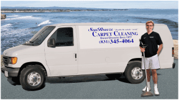
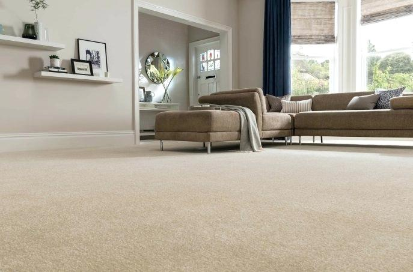
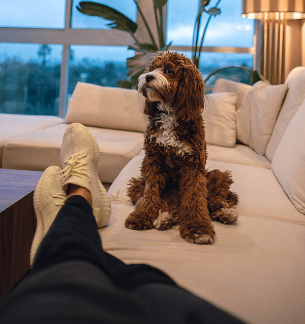
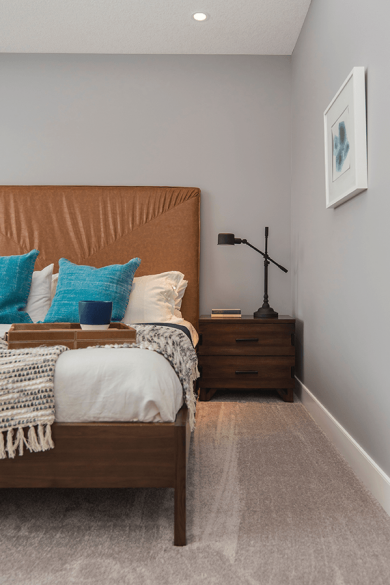
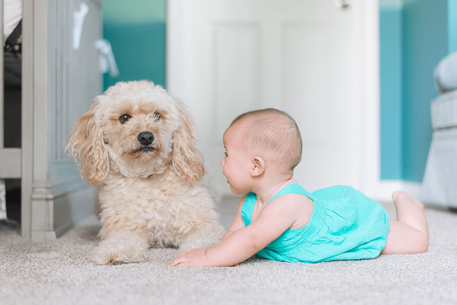

Sea Breeze Carpet Cleaning has been owner operated since 1977, providing carpet cleaning, upholstery cleaning, tile cleaning, and pet odor removal throughout Santa Cruz County.
We use a powerful truck-mounted steam cleaning system for deeper carpet cleaning, fresher carpets, and faster dry times.


Professional carpet cleaning and home cleaning services for Santa Cruz, Capitola, Aptos, Soquel, Scotts Valley, and Watsonville.
Professional hot-water extraction using truck-mounted equipment for deeper cleaning than store rental machines.
Learn about carpet cleaning in Santa Cruz →Couches, chairs, love seats, car interiors, and other fabric surfaces cleaned carefully and professionally.
Learn about upholstery cleaning →Specialized treatment to help remove embedded pet odors and allergens at the source.
Learn about pet odor removal →Professional cleaning for tile and grout to help restore a cleaner, brighter look in kitchens, bathrooms, and other high-traffic areas.
Learn about tile cleaning →If any spots return within six weeks, Sea Breeze Carpet Cleaning will return to remove them again at no charge.
If you are looking for a carpet cleaner near Santa Cruz, these are the areas Sea Breeze serves most often.
Trusted local service for carpets, upholstery, pet odors, and everyday family homes.

Fresh, clean spaces for homes with pets and everyday life.
Carpets and upholstery that look better and feel cleaner.

Professional carpet care for the spaces people notice every day.
Typical dry time is about 5 to 8 hours, often faster in warm weather or with windows open and airflow moving through the home.
Yes. Sea Breeze provides upholstery cleaning, pet odor removal, and tile and grout cleaning in addition to carpet cleaning.
Usually, yes. Most estimates can be given right over the phone.
Need carpet cleaning in Santa Cruz County? Call today for a free estimate on carpet cleaning, upholstery cleaning, tile cleaning, or pet odor removal.
Serving Santa Cruz, Capitola, Soquel, Aptos, La Selva Beach, Rio Del Mar, Watsonville, and Scotts Valley. Habla español.
